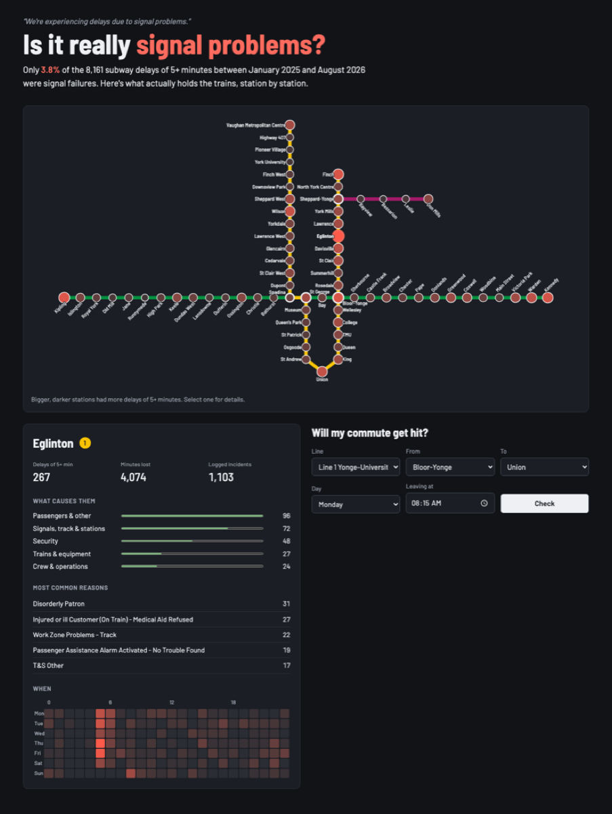

Data engineering · full stack
signal-problems
Toronto subway delays, decoded. Is it really "signal problems"?
Turns the TTC's open delay log into a clean dataset, an API and an interactive subway map. The hard part is the data: operators type station names by hand, so the log has 1,251 spellings for 70 stations, plus renamed stations, typos and names cut off at 22 characters.
- 99.7% of 260,000 rows (2014–2026) resolved, by a resolver that never guesses
- 3.6% of 5+ minute delays are actual signal failures
- Commute check: how often your trip got hit, for the period you choose
Python · FastAPI · PostgreSQL · SQLAlchemy · React · TypeScript · Docker · GitHub Actions